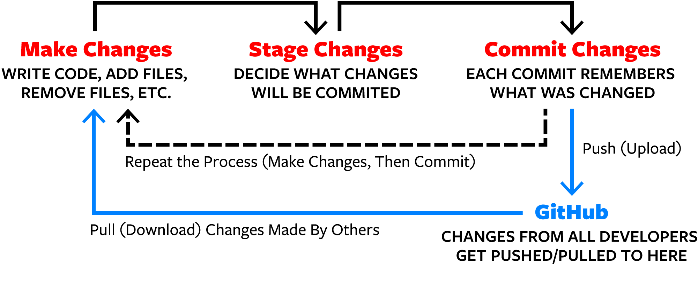

Intro to GitHub
Version Control (GitHub)
In order to collaborate on an R project (or any coding project in general), data scientists typically use a version control system like GitHub. With GitHub, you never have to save files as Final.docx, Final2.docx, Newfinal.docx, RealFinal.docx, nothisisreallyit.docx, etc. You update code like .qmd and .Rmd and data files, recording descriptions of any changes. Then if you ever want to go back to an earlier version, GitHub can facilitate that. Or if you want to make your work public, others can see it and even suggest changes, but you are ultimately in control of any changes that get made.
And, you can have multiple collaborators with access to the same set of files. While it can be dicey if multiple people have the file open and make changes at the same time; if you do this with GitHub, it is at least POSSIBLE to get it straightened out, and the second person who tries to save will get warned. If you are both just using a common folder on RStudio, you can easily write over and erase each other’s work. (If you use a common folder, be sure that one person is editing at a time to prevent this).
In order to begin to get familiar with GitHub, we will use it to create a course folder for you.
Getting started on GitHub and connecting to RStudio
Create a GitHub account at github.com. It’s usually okay to hit “Skip Personalization” at the bottom of the screen after entering an email, username, and password (you might have to enable 2-factor authentication as well). There are a few bonuses you can get as a student that you might consider.
- You may choose to use a non-St. Olaf email address to ensure you’ll have access to your GitHub account after you graduate.
Obtain a personal access token (PAT) in GitHub using the following steps:
- Click your profile picture/symbol in the upper right of your GitHub page. Then select Settings > Developer settings > Personal access tokens > Tokens (classic).
- Click “Generate new token (classic)” and give a descriptive name like “My PAT for RStudio”. Note that the default expiration is 30 days; I did a Custom setting through the end of the semester.
- Select scopes and permissions; I often select: repo, workflow, gist, and user.
- Click “Generate token”. Copy your personal access token and store it somewhere.
Store your credentials in RStudio using the following steps:
- In the console, type
library(credentials). You might have to install thecredentialspackage first. - Then type
set_github_pat()and hit Return. You can sign in with the browser, or you can choose the Token option, where you can copy in your personal access token
- In the console, type
Alert! If the steps in (3) don’t work, you may have to install Git on your computer first. This chapter in “Happy Git with R” provides nice guidance for installing Git. Installing Git for Windows seems to work well on most Windows machines, using this site seems to work well for macOS, and a command like sudo apt-get install git can often work nicely in Linux. Once Git is installed, restart RStudio, and it will usually magically find Git. If not, there’s some good advice in this chapter of “Happy Git with R”. If you ever get frustrated with Git, remember that No one is giving out Git Nerd merit badges! Just muddle through until you figure out something that works for you!
Creating an R project (local) that’s connected to GitHub (cloud)
In your GitHub account, click the \(+ \nabla\) (+down arrow) button near the top right and select New Repository (repo). Put something like “SDS264_S25” for your repository (repo) name; use simple but descriptive names that avoid spaces. Check Private for now; you can turn a repository Public if you want later. Check Add a ReadMe File. Finally hit Create Repository and copy the URL once your repo has been created; the URL should be something like
github.com/username/SDS264_S25.Go into your RStudio and select File > New Project > Version Control > Git. For the repository URL paste in the URL for the repository you just created. A project directory named “SDS264_S25” will be created in your specified folder (which you can navigate to).
Notice that you are now starting with a blank slate! Nothing in the environment or history. Also note where it says your project name in the top right corner.
At this point your should have a GitHub repo called “SDS264_S25” connected to an R project named “SDS264_S25”. The basic framework is set!
Here is an illustration (source) of the process of using GitHub to manage version control and collaboration, followed by greater detail about each step:

Creating new files in RStudio (local)
- You can download our first file with in-class exercises here. Just hit the Download Raw File button and note where the file is saved on your computer. Use File > Open File in RStudio to open up
01_review164.qmd. Then, use File > Save As to navigate to the SDS264_S25 folder on your computer and save a copy there. You can even add your name or a few answers and re-save your file.
Making sure the connection to GitHub is ready
- [If necessary] You may need one of these two steps when using GitHub for the first name in a new R Project, even though you likely did them while installing GitHub.
- In the console, type
library(credentials). Then typeset_github_pat(), hit Return, and copy in your personal access token. - In the Terminal window (this should be the tab next to Console), type the following two lines (be precise with the dashes and spaces!!):
- In the console, type
git config --global user.name "YOUR USER NAME"
git config --global user.email "YOUR EMAIL ASSOCIATED WITH GITHUB"
Pushing your work to GitHub (cloud)
- We now want to “push” the changes made in
01_review164.qmdto your GitHub repo (the changes have only been made in your local RStudio for now).- under the Git tab in the Environment panel, check the boxes in front of all modified files to “stage” your changes. To select a large number of files, check the top box, scroll down to the bottom of the list, and then shift-click the final box
- click the Commit tab to “commit” your changes (like saving a file locally) along with a message describing the changes you made. GitHub guides you by by showing your old code (red) and new code (green), to make sure you approve of the changes. This first time, all code should be green since we’ve only added new things rather than modifying previously saved files.
- “push” your changes to GitHub (an external website) by clicking the green Up arrow. Refresh your GitHub account to see new files in the user_name.github.io repo!
Modifying files that have already been pushed to GitHub
- Make and save a change (anything) to your file
01_review164.qmdin RStudio. Now go back under the Git tab and “push” these new changes to GitHub. You’ll have to go through the same process of Stage, Commit, and Push, although this time you’ll see only your newest changes in green when you Commit. Confirm that your changes appear in GitHub.
Pulling work from GitHub
Before you start a new session of working on a project in RStudio, you should always Pull changes from GitHub first. Most of the time there will be nothing new, but if a collaborator made changes since the last time you worked on a file, you want to make sure you’re working with the latest and greatest version. If not, you’ll end up trying to Push changes made to an old version, and GitHub will balk and produce Merge Conflict messages. We’ll see how to handle Merge Conflicts later, but it’s a bit of a pain and best avoided!
- Go into
01_review164.qmdon GitHub and hit the Edit icon. Add a line anywhere, and then scroll down to hit Commit Changes. (This is not recommended and for illustrative purposes only! You will likely never edit directly in GitHub, but we’re emulating what might happen if a collaborator makes changes since the last time you worked on a document.) Now go back to RStudio and, under the Git tab, “Pull” the changes from GitHub into your R project folder. (Use the blue Down arrow). Confirm that your changes now appear in RStudio. Before you start working on the R server, you should always Pull any changes that might have been made on GitHub (especially if you’re working on a team!), since things can get dicey if you try to merge new changes from RStudio with new changes on GitHub.
A bit more about R projects
- To see the power of projects, select File > Close Project and Don’t Save the workspace image. Then, select File > Recent Projects > SDS264_S25; you will get a clean Environment and Console once again, but History shows the commands you ran by hand, active Rmd and qmd files appear in the Source panel, and Files contains the Rmd, qmd, html, and csv files produced by your last session. And you can stage, commit and push the changes and the new file to GitHub!